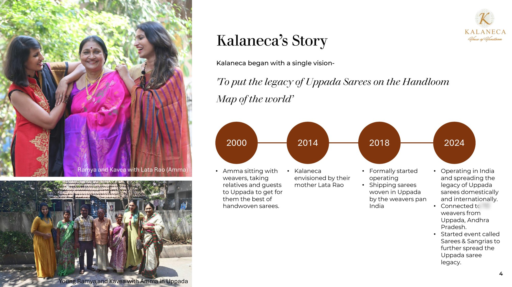
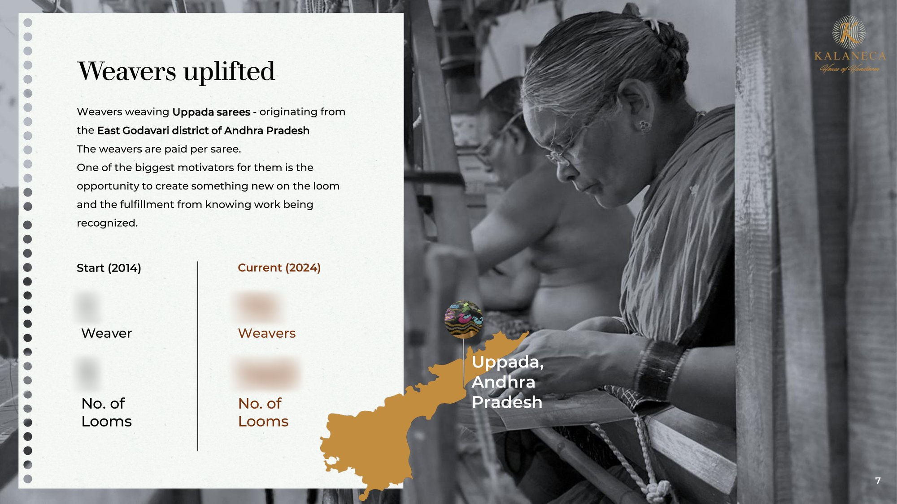
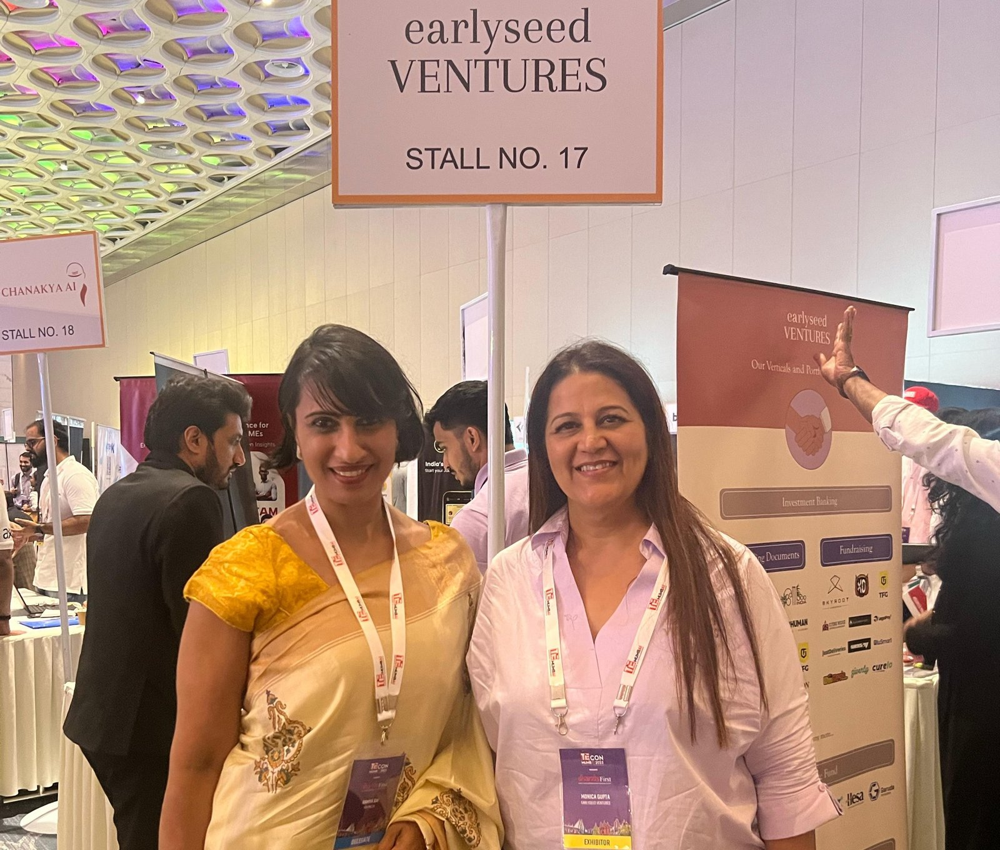
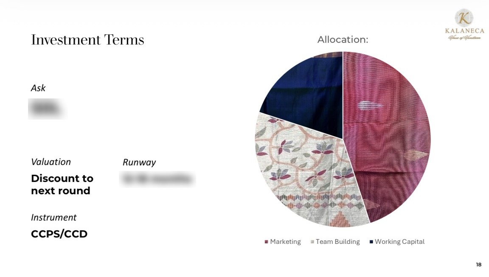
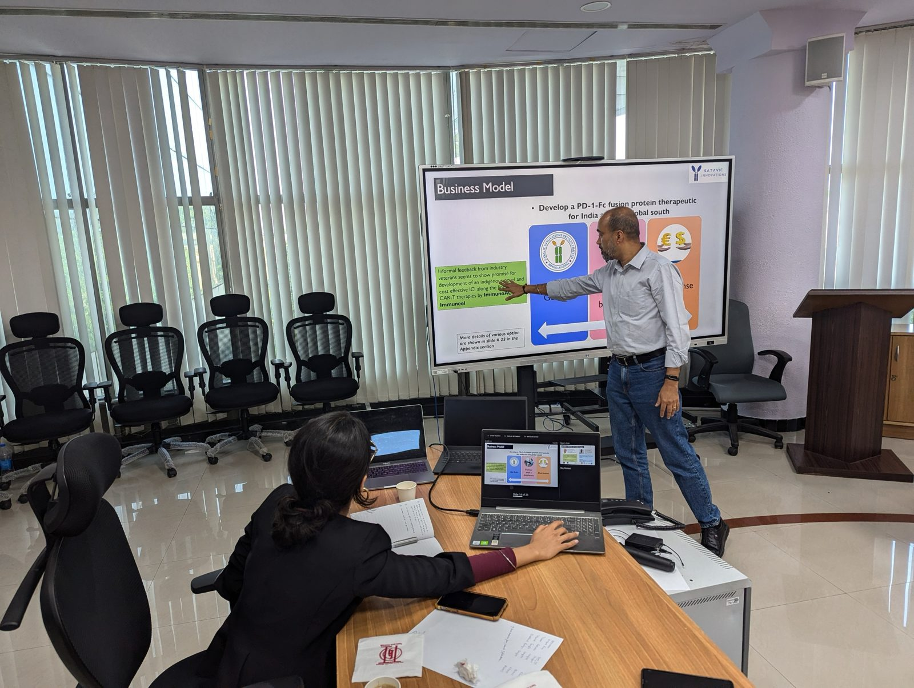

Most pitch decks I see don't fail because the business is weak. They fail because the story is missing.
A founder will spend months building a product, finding customers and getting the numbers right. Then the deck arrives as a neat set of slides: revenue, margins, market size, the ask. Everything is accurate. And an investor closes it after three minutes, because nothing in it made them care.
At Prologue, we work with founders before they walk into an investor meeting. Here is what I have learned about what separates a deck that gets a second meeting from one that gets a polite "we'll get back to you."
A pitch deck is a story, not a spreadsheet
Ramya, one of our founders, runs Kalaneca, a label of handwoven sarees. When she first came to us, she didn't have a pitch deck at all. She had the details: collections, pricing, channels, growth. Good numbers, but on their own they would have read like an annual report.
What made the brand stand out was where it all began. Long before Kalaneca existed, Ramya's mother, Lata Rao, spent years sitting with the weavers of Uppada. So we built the deck from scratch around that story, and the numbers that followed had a reason behind them.
We also worked hard on the competition slide. Sarees are a crowded market, and the instinct is to play that down. We did the opposite. We showed clearly where they stood among the other players and why their customers chose them.
After that, they received acquisition offers.
The numbers were always there. The story is what made investors care.



Why AI-generated decks fall flat
Today a founder can produce a full pitch deck with AI in ten minutes. It will look tidy. It will have all the right headings. And it will feel cut and dry.
Investors see hundreds of decks, and they recognise an AI-generated one almost immediately. What's missing is the human element: the founder's conviction, their voice, the small details only someone who has lived the business would know.
Use AI to help with a first draft if you like. But the thinking, the story and the judgement have to be yours.
The slides investors actually spend time on
A good startup pitch deck is usually 10 to 15 slides. It opens with the problem you solve and why it matters. Then comes your solution, and why you are the right team to build it.
The market slide should be realistic, grounded in the customers you can actually reach, not a large number borrowed from a report. The competition slide should be honest. Then traction, your business model, and a simple view of the financials.
The slide founders rush most is the ask. It deserves the most thought. How much are you raising, what exactly will you spend it on, and what will the business look like when that money has done its job? A thoughtful ask tells an investor you know where you are going.
If you are unsure what valuation to put on that slide, I have written a separate guide on how to value a pre-revenue startup in India.

Design is not decoration
When a founder takes time to design their deck well, it shows. It tells an investor you respect their time and care about the details.
Good design is not about fancy graphics. It is about clarity: one idea per slide, consistent with your brand, easy to follow even if the investor reads it alone at night without you there to explain.

Before you send your deck
Read it as if you were the investor. Does the first slide make you want to see the second? Can you tell, within a minute, what this business does and why this founder? Is the ask clear?
If the answer to any of these is "not quite," it is worth fixing before you send it. You rarely get a second first impression with an investor.
Let's write your prologue
At Prologue by Earlyseed Ventures, we help founders build pitch decks, financial models and the full set of documents investors expect, with the story at the centre. Whether you have an idea with early traction or a business ready for its first serious raise, there is a package built for where you are.